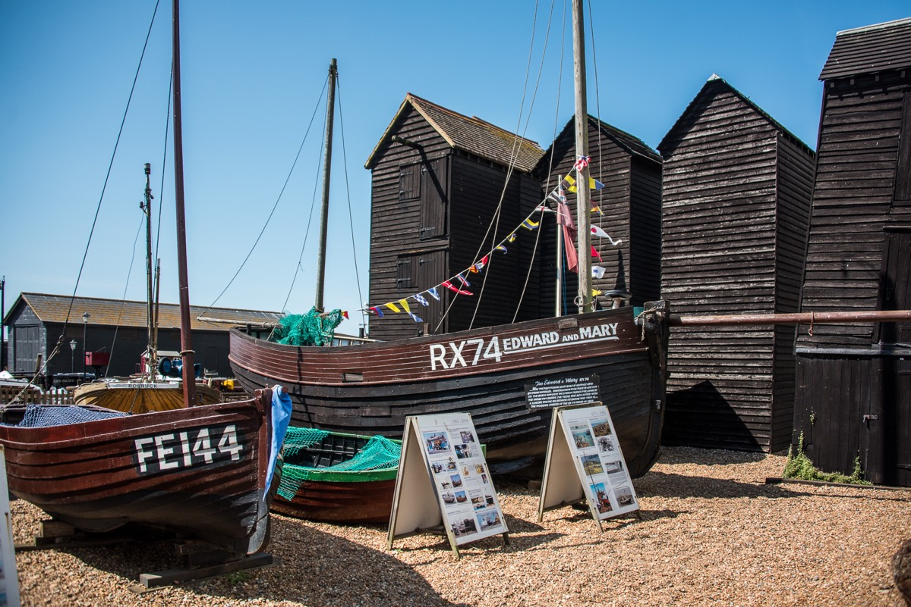
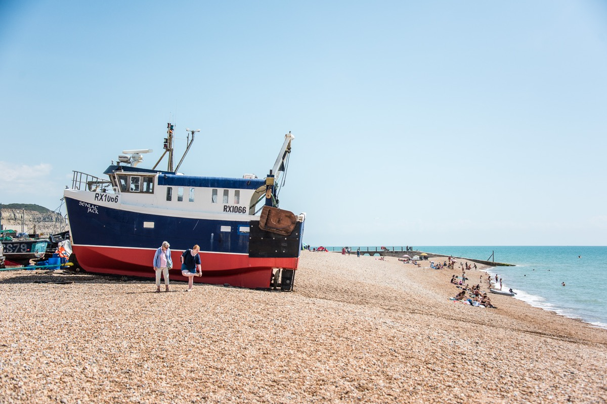
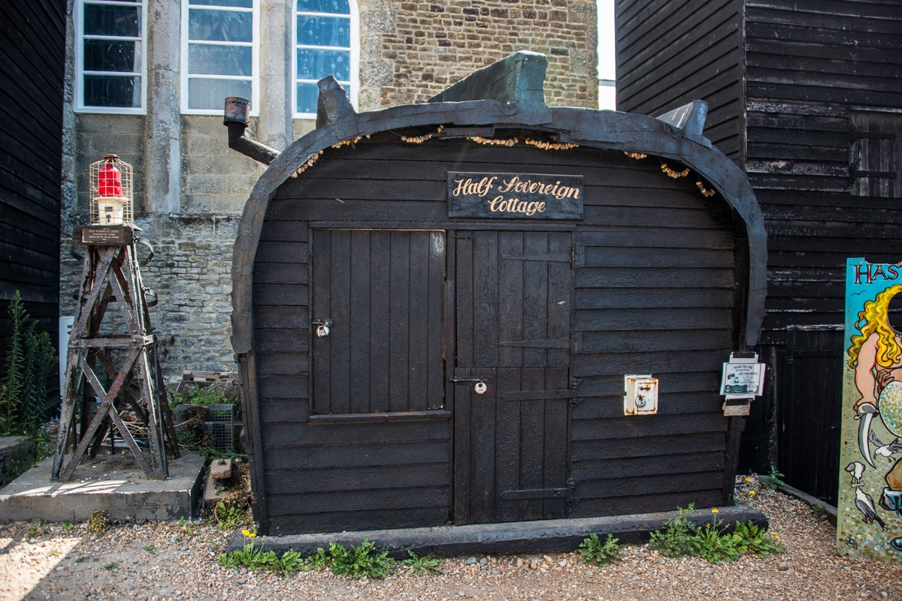
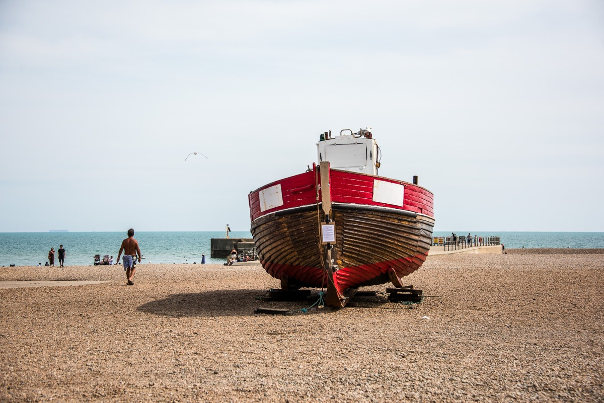
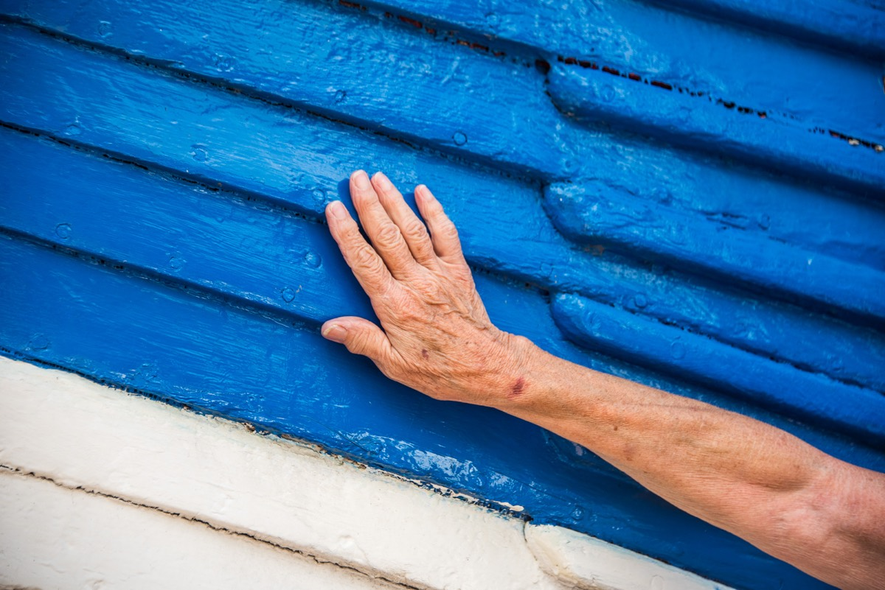
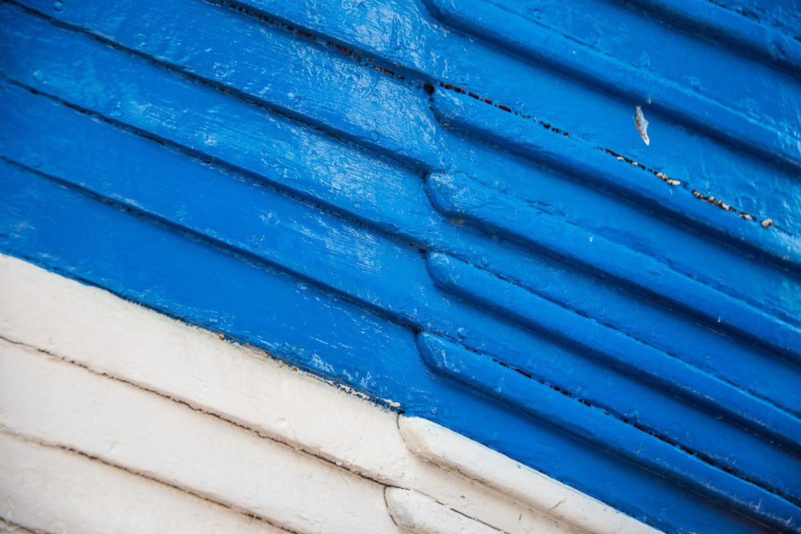
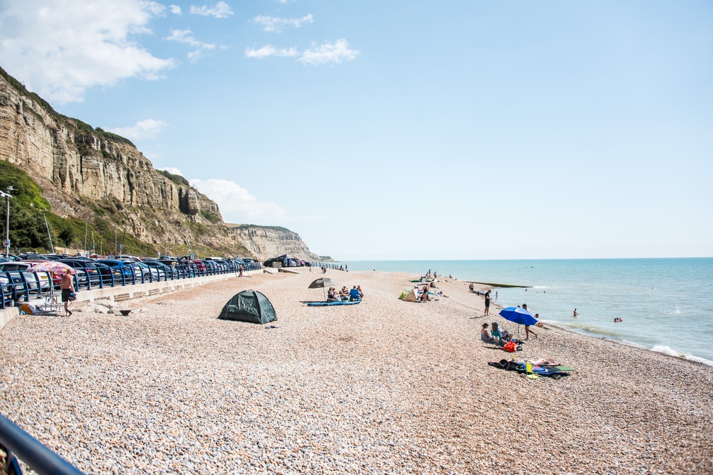
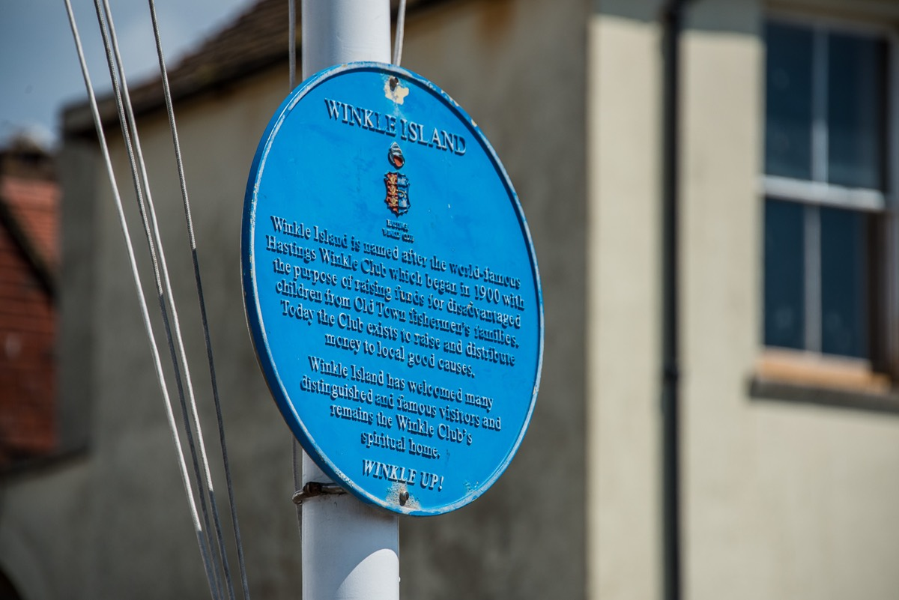

Nine Hundred Years
on the Beach
The guide has lived in Hastings all her life, and has family links to the fishing fleet — the kind of connection that runs through most families in the Old Town, where fishing has continued, in one form or another, for close to a millennium.

The walk follows the Stade — the Old English word for a landing place — from the Fishermen's Museum along the working beach to Rock-a-Nore, up the East Hill and back through the Old Town's narrow lanes. This stretch of shingle claims to hold the largest beach-launched fishing fleet in Europe, boats hauled straight up onto the pebbles with no harbour to shelter them, exactly as they have been since the Middle Ages.
Much of what follows is about how a fishing community that the borough wanted, at various points, to push out of sight entirely — because Hastings was reinventing itself as a genteel Victorian resort — instead ended up as the thing visitors most want to see.
The Fishermen's Museum
& Half Sovereign Cottage
The museum occupies the former Church of St Nicholas, built in 1854 as a "chapel of ease" to All Saints — a subsidiary mission church, put up on the beach itself because the fishing community mostly wasn't attending services at the two parish churches on the hill above. The building cost around £529 and opened for worship on 26 March 1854.

The centrepiece inside is a genuine fishing boat, pushed in sideways after part of the wall was taken down and rebuilt around it. This is the RX ENTERPRISE, the last sailing boat built in Hastings, according to the guide's dating, in the early 1910s — installed inside the church-turned-museum in 1956, when the derelict building was restored by the Old Hastings Preservation Society and opened as the Fishermen's Museum.
The fishing community was not, at first, especially welcoming to its new church — some of the men had wanted the plot of ground for themselves, and Sunday was, for many, still a working day. The mission closed for a period in the 1870s.
It closed for good at the start of the Second World War, when Rock-a-Nore became a restricted military zone; the building was requisitioned as a store and suffered war damage, including the loss of a stained-glass east window. Afterwards it served time as an ironmonger's warehouse before the preservation society leased it from the council and converted it into today's museum.
Beside the museum stands Half Sovereign Cottage — half of a boat's hull, fitted out as a tiny dwelling, with what was once a fish-roll stall in the other half. The guide tells the traditional story attached to it: that boats caught smuggling were sometimes deliberately sawn in two by customs officers, a punishment severe enough that the culprit could never put to sea in that boat again.
The practice itself is documented — 18th- and 19th-century Preventive Men did "saw boats asunder amidships" when smuggling was suspected, and several of the half-boat shacks along this stretch of beach are said to descend from that habit.
The specific cottage on display, however, is a later addition built for the museum from a boat registered RX40 and known as the Golden Sovereign, cut in two around 1990 and set up here as an illustration of the old custom rather than as a surviving example of it — the "Half Sovereign" name is a play on that boat's name, not a record of an actual prosecution.
How a Hastings
Boat Is Built
The guide uses two boats side by side to explain construction. Hastings boats are clinker-built — planked with overlapping strakes rather than flush — because they are never left afloat. Pulled up onto shingle every day, exposed to sun and salt water in turn, the timber needs room to expand and contract; overlapping planks flex with that movement in a way that a smooth hull cannot.

The registration letters — RX — trace back to the nearest official port. Hastings itself had no separate registry, so boats were registered to Rye. R for Rye's first letter; X rather than the expected E, the guide explains, because E had already been allocated to Ramsgate, and two ports could not share a code.
Older boats have a "lute" stern — an open transom that lets the deck run straight through to the back, useful for handling nets, but liable to ship water in a following sea. Newer designs use an elliptical, closed stern that deflects waves rather than letting them break over the deck, at the cost of that open working space.
Before synthetic fibres, everything organic on a boat needed preserving against rot: hulls were coated in coal tar, sails and nets steeped in a reddish-brown dye called cutch, boiled from the resin of an acacia tree, which is why old photographs show Hastings luggers with tan-coloured sails rather than white — and why the fishermen themselves were nicknamed "tan-frocks", after the colour their canvas smocks turned in the same dye.
The Net Shops
The tall, black, weatherboarded huts behind the museum are net shops, and the guide is firm about what they were for: storing and mending nets, not drying them (nets were dried on the shingle or on the slopes of the East Hill) and never for sleeping in, whatever visitors assume.

Their odd proportions — narrow footprints stacked three storeys high — come from an 1830s council restriction limiting each hut to no more than eight feet square on the ground. As Hastings began marketing itself as a health resort, the corporation wanted the fishing industry's mess and smell contained and out of the way of paying visitors; the fishermen's answer to a tiny footprint was to build upward instead, with a pulley jutting from the top floor to haul nets up for storage and repair.
The guide also connects the quarter to Beatrix Potter, who stayed near the Old Town seafront in the autumn of 1903 and is commemorated with a local blue plaque. Locally, the net shops and the fictional port of "Stymouth" in her story The Tale of Little Pig Robinson are said to be one and the same.
The Hastings connection is genuine as far as it goes — Potter did visit, and did compose material during her stay. But Potter's own later correspondence, and most published scholarship on the book, identifies "Stymouth" specifically with Sidmouth in Devon, blended with Teignmouth and Lyme Regis, based on watercolours she made on holidays there.
The truth is probably that Hastings contributed something to the atmosphere of the book without being its literal model — worth knowing as a piece of well-loved local lore rather than a settled fact.
Dunkirk
& a Fleet in Decline
In late May 1940, the Hastings lifeboat Cyril and Lilian Bishop was called to Dover as part of the evacuation of Allied troops from Dunkirk. Her Hastings crew — coxswain George Moon among them — brought her across, after which the Admiralty took over and sent the local men home by train while a naval crew completed the operation, ferrying soldiers from the beaches out to larger ships under fire. She returned with bullet holes in her hull and became known afterwards as "the Ghost of Dunkirk."
Ten Hastings fishing boats also answered the call to muster at Folkestone, though in the end none were used — each crew was still given a commemorative plaque for having volunteered. Wartime restrictions then closed the beach to fishing at night, since German aircraft used boat lights to orient themselves; one fishing boat that struck a mine was destroyed, and a fisherman working on deck was killed by machine-gun fire from a passing plane.
The guide is candid that the industry's more recent decline has less to do with the sea than with regulation and competition. Strict EU-derived catch quotas, medical fitness and colour-blindness testing, and estimation requirements for undersized fish sit alongside a structural disadvantage: large trawlers dragging the seabed can out-fish small beach-launched boats many times over, while Hastings boats — restricted to roughly 10 metres — fish more sustainably but cannot compete on volume.
Horses, Capstans
& the Ice House
Before engines, boats were hauled up the shingle by capstan — a horse harnessed to a wooden post, walking in a circle to wind in a rope attached to the boat. A boy stationed ashore watched for a flag raised on the returning boat's mast, signalling that it was time to fetch a horse from the council stables (which stood where the Shipwreck Museum is today) and set the capstan turning. Two flags meant two horses were needed.

Motorised winches and, later, tractors replaced the horses in the 20th century. As a small nod to that history, the paved surface near the modern gallery building on the Stade has been laid with circular patterns echoing the paths the capstan horses once wore into the beach.
Nearby, the building now used as a doctor's surgery and flats was once the Ice House, where ice was made and stored to pack fish for the Victorian rail network — once the railway reached Hastings, ice-packed catches could be sent up to London markets quickly for the first time. Its modern replacement was deliberately designed to echo the silhouette of a net shop.
Rock-a-Nore, the Cliffs
& the Hermit's Cave
Rock-a-Nore takes its name straightforwardly from "black rock" or a similarly descriptive Old English phrase for the dark sandstone underfoot — a stone quite different from the chalk cliffs at nearby Beachy Head or Dover, being part of the Wealden sandstone belt that runs inland as far as Tunbridge Wells. Soft and easily eroded, it has produced the string of glens along this coast — Ecclesbourne among them — and made the cliffs a magnet for rockfalls, and historically, for smugglers exploiting the coves.

The coastline here is designated a Site of Special Scientific Interest, valued for rare cliff-nesting birds, as a stopover for migrating species, and — improbably — for dinosaur and other fossil remains found in the exposed strata.
The guide points out caves cut into the sandstone that were, in the mid-19th century, home to an Irish itinerant, remembered locally by a name close to "Mervyn" or "Mourner's" Butler, who lived there with his wife and a collection of animals. The 1851 census apparently recorded him with an unusual occupation description and noted his address as a "hermitage cave."
It fits a wider pattern of makeshift housing in a period of acute overcrowding in the Old Town: families living in half-boats, railway navvies in trackside sheds, and — as the guide notes — even boats accounted for as a household's address in that year's census if a fisherman happened to be at sea when the enumerator called.
The East Hill Lift
Excavation for the East Hill Lift began in 1901, cut directly into the cliff face, and the funicular opened the following year. At a gradient of around 1 in 1.3 — close to 38 degrees — it remains one of the steepest funicular railways in Britain. It was originally powered by a water-balance system: twin tanks at the top station were filled with water, and the extra weight in the descending car's tank pulled the ascending car up as the two were connected by cable, a method common to both of Hastings's cliff lifts before electrification in the 1970s.
The line gives access to Hastings Country Park above, and on the way up, uninterrupted views back down over the Stade and the net shops — from a height nothing else on the walk quite matches.
The RNLI Lifeboat House
& Two Ferraris
Hastings's current lifeboat station is purpose-built with an attached visitor centre, and its story begins with an unlikely bequest. Richard Colton, a businessman and classic-car collector, left two rare Ferraris — a 1960 250 GT SWB and a 1967 275 GTB/4 — to the RNLI in his will when he died in 2015.
The guide explains that Hastings's demands on a lifeboat are unusual: much of the work here is close inshore, rescuing people cut off by tides beneath the cliffs, rather than the longer, rougher rescues a fast all-weather boat is built for — one reason the station has periodically reviewed which class of vessel best suits local conditions.
Winkle Island
& the Winkle Club
The Winkle Club was founded by a group of Hastings fishermen meeting at the Prince Albert pub — now the Mermaid Fish and Chips restaurant on Rock-a-Nore Road — with a single aim: raising money to give poor children of the borough a proper Christmas. There was no welfare state at the time, and winters were lean for fishing families most of all.

Every member — a "Winkler" — must carry a winkle shell (traditionally emptied and refilled with wax) at all times. Any member can challenge another to "winkle up"; failing to produce the shell means a fine, all of it going to charity. The system proved so effective that the club funded children's Christmas parties for several hundred children annually for decades.
A small number of honorary members have been presented with a solid-gold winkle rather than the usual wax-filled shell, among them the future Duke of Windsor in 1927 and Sir Winston Churchill, who accepted membership in 1955 and reportedly said it was one honour, among the many offered to him that year, that he genuinely wanted.
The giant winkle-shell sculpture on Winkle Island still serves as a public collecting box for the club's causes today.
A Fisherman Shot
on His Own Boat
The guide tells the story of Joseph Swain, a Hastings fisherman confronted on his own boat by a customs officer searching for contraband during the smuggling era. According to the account she gives, the officer used a bayonet to probe the catch for concealed goods, damaging the fish in the process; a struggle followed, and Swain was shot and killed.
A small plaque commemorating the incident survives nearby, in a window above what is now the Mermaid Fish and Chips restaurant — easy to miss, and, as the guide notes, largely unread by passers-by who don't already know it's there.
East Cliff House,
the Twittens & the Lookout
East Cliff House, at the seafront end of All Saints Street, was built in 1762 by Edward Capell — a genuine Shakespearean scholar and the government's deputy-inspector of plays, a post that functioned as an official censor of the London stage. Capell was a friend of the actor David Garrick, whose own campaign to elevate Shakespeare's reputation, including the 1769 Stratford Jubilee, made mementoes carved from a mulberry tree associated with the playwright into prized objects among his circle.
The house was unusual for its time in facing the sea rather than the street — an early example of what would later become the standard orientation for Hastings's seaside villas, built decades before the town's Victorian resort boom made sea views the whole point.
Locally, the garden is said to hold a mulberry tree grown from a cutting taken from Shakespeare's own tree at New Place in Stratford-upon-Avon, brought to Hastings by Garrick himself. The Capell–Garrick friendship is documented; the specific cutting is a charming story that could not be independently confirmed here, and is best taken as attractive local tradition.
From here the walk climbs through a twitten — a narrow passage peculiar to Sussex dialect, cut through what were once long cottage gardens. As overcrowding worsened in the Old Town valley, landowners built new houses directly into these gardens, slicing narrow footpaths between them for access; several houses along the route show where a corner was literally cut away to create a passage.
The walk ends at the Lookout, a viewpoint above the Old Town where, before telephones, fishermen's wives and mothers would climb to watch for a flag on a returning boat — the only way of knowing a husband or son was safely on his way home, and, less happily, whether he'd stop first at a pub to spend his wages before coming home at all.